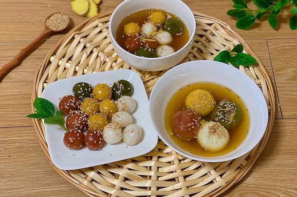

Banh Troi/Vietnamese Sugary Rice Balls

Description
Bánh trôi is the name of a traditional Vietnamese dessert which consists of delicious tiny balls of glutinous rice wrapped around a sweet filling. The sticky and elastic dough for bánh trôi is made with a mixture of plain and glutinous rice flour that's merely bound with water.
The dough is wrapped around a piece of dark palm sugar, rolled into a ball, and cooked until the balls float up to the surface. This authentic Vietnamese dessert is usually associated with northern Vietnam, especially the region of Hanoi. It is served freshly prepared, and roasted sesame seeds or
grated coconut are sprinkled on top of each piece. They mainly come in plain white color, but different food colorings can be added to the basic dough in order to create a more decorative treat.
Ingredients
- 200 g glutinous rice flour
- 20 g rice flour
- 1⁄4 tsp fine salt
- 200 g warm water #1
- 20 g warm water #2
- 5 g toasted white sesame seeds
- 75 g pure cane sugar (đường phên)
Steps
Maing the dough
- Add the two types of rice flours and salt to a large bowl. Then, add the water #1 gradually and mix as you go.
- Add a couple of teaspoons at a time of the water #2, while continuing to mix, until the dough is all one clump and you no longer have loose dry flour. We ended up adding 17g. Do not add more than needed- your dough should not be wet.
- Cover a let rest on the counter for at least 30 minutes.
Filling & Topping
- Cut the sugar into 1cm cubes. You will need one cube for each bánh.
- If your sesame seeds are not already toasted: heat a pan on medium. Add sesame seeds. Toss/stir until golden – about 30 seconds. Remove from heat and set aside.
Assembling
- Break off 15g of dough and squeeze it together into a rough ball so no bits will fall off.
- Gently flatten and add a sugar cube in the center.
- Fold the sides inward to close it up and squeeze tight.
- Roll it between your palms to form a smooth ball.
- Repeat for the remaining dough & sugar.
Cooking
- Bring a large pot of water to boil on high heat. Once water is boiling, reduce heat to medium low and add in the balls.
- Stir gently to prevent them from sticking to the bottom or to one another.
- Cook until the balls float up to the surface and stay afloat (about 20-25 minutes).
You will understand the second line of the poem in the post at this point. The balls will float and sink several times throughout the cooking.
- Remove from pot with a slotted spoon and add to a bowl of cold water with 2-3 ice cubes. Let sit for 5 minutes, remove with a slotted spoon and place onto a plate.
- Top each bánh with some toasted sesame seeds and serve!